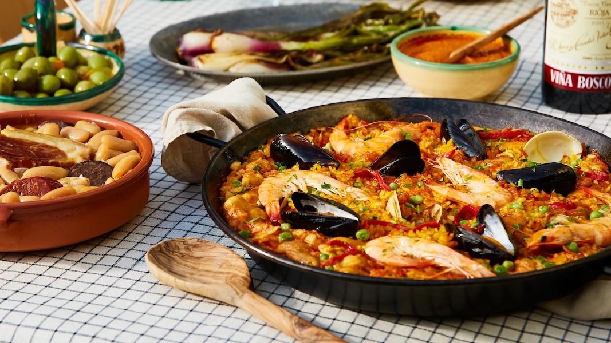

Paella

Description
Paella is a rice dish originally from the Valencian Community. Paella is regarded as one of
the community's identifying symbols. It is one of the best-known dishes in Spanish cuisine.
Ingredients
- 2 tablespoons olive oil
- 1 tablespoon ground paprika
- 2 teaspoons dried oregano
- salt and ground black pepper to taste
- 2 pounds skinless, boneless chicken breasts, cut into 2 inch pieces
- 2 tablespoons olive oil, divided
- 3 cloves garlic, crushed
- 1 teaspoon crushed red pepper flakes
- 2 cups uncooked short-grain white rice
- 1 pinch saffron threads
- 1 large bay leaf
- ½ bunch Italian flat leaf parsley, chopped
- 1 quart chicken stock
- 2 medium lemons, zested
- 2 tablespoons olive oil
- 1 medium Spanish onion, chopped
- 1 medium red bell pepper, coarsely chopped
- 1 pound shrimp, peeled and deveined
- 1 pound chorizo sausage, casings removed and crumbled
Steps
- Mix olive oil, paprika, oregano, salt, and pepper for marinade in a glass bowl.
- Begin paella: Add chicken and stir to coat. Cover and refrigerate until needed.
- Heat 2 tablespoons olive oil in a large skillet or paella pan over medium heat.
Stir in garlic and pepper flakes, then stir in rice. Cook and stir until rice is coated with oil, about 3 minutes.
- Heat 2 tablespoons olive oil in a large skillet or paella pan over medium heat.
Stir in garlic and pepper flakes, then stir in rice. Cook and stir until rice is coated with oil, about 3 minutes.
- While the rice is cooking, heat olive oil in a separate skillet over medium heat.
Stir in marinated chicken and cook for 3 minutes. Add onion and cook until translucent, about 5 minutes.
- Add bell pepper and sausage; cook and stir, breaking sausage up with a spatula, for 5 minutes.
Add shrimp; cook and stir until shrimp are bright pink on the outside and the meat is opaque, about 2 minutes.
- Spread rice mixture onto a serving tray. Top with meat and seafood mixture.